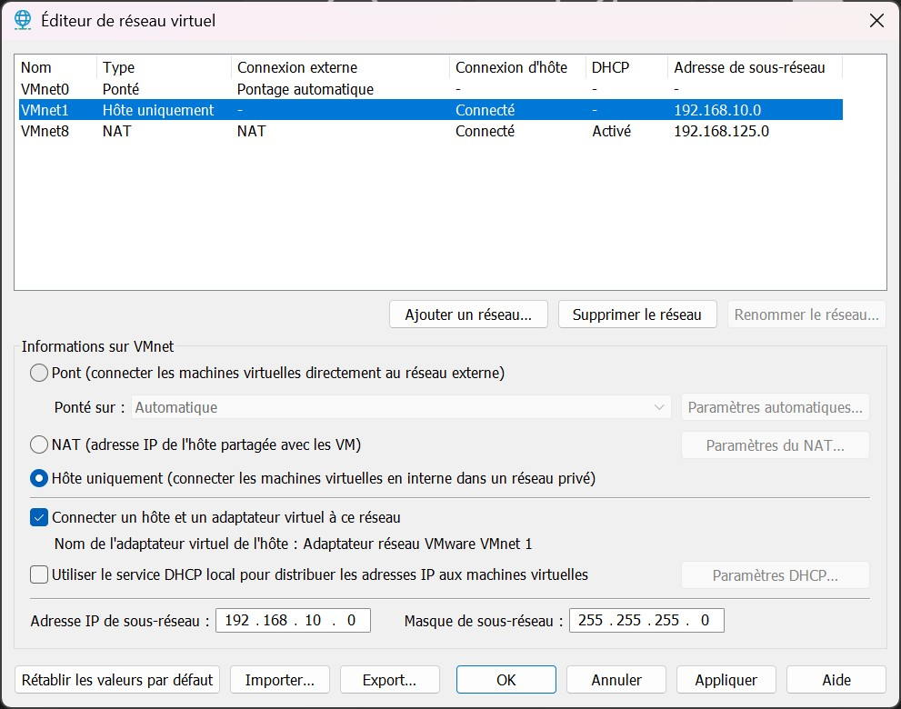
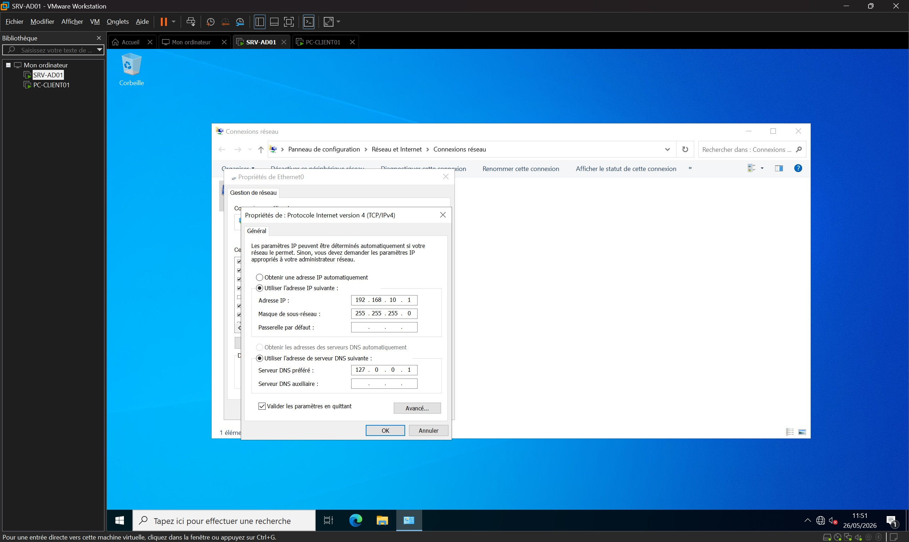
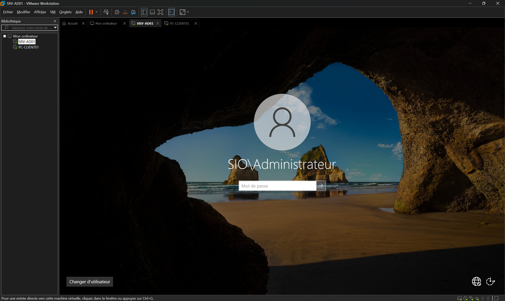
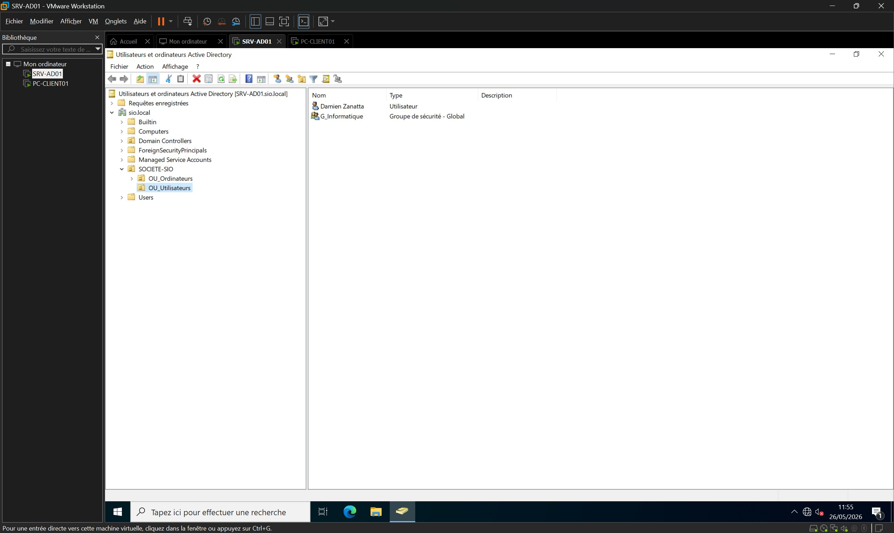
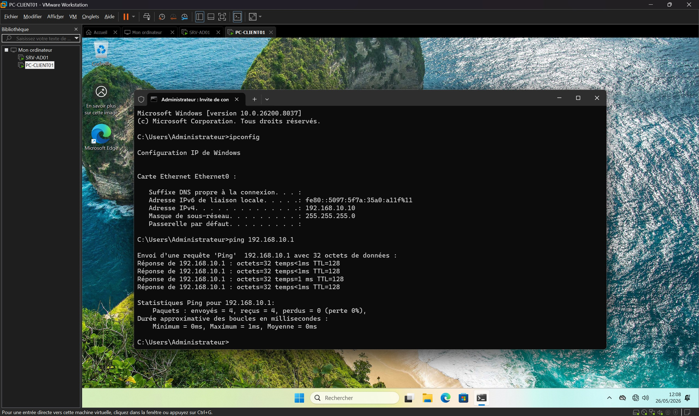
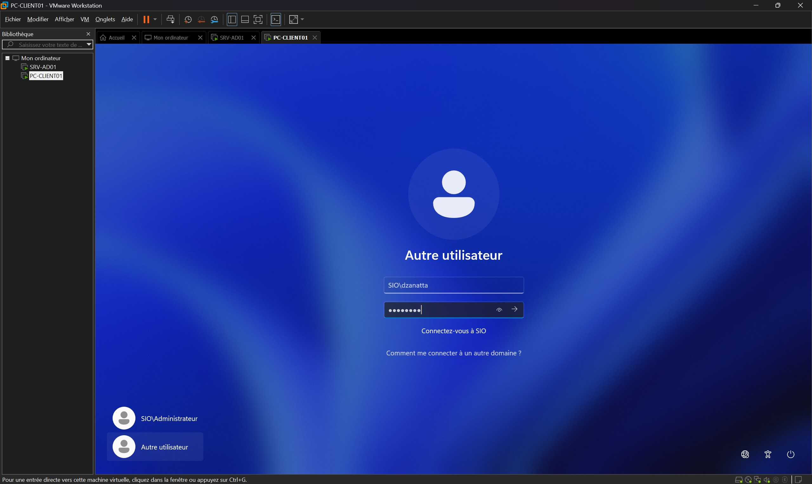
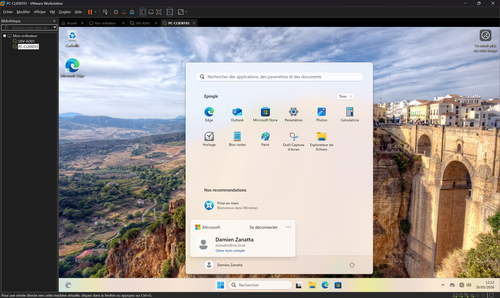
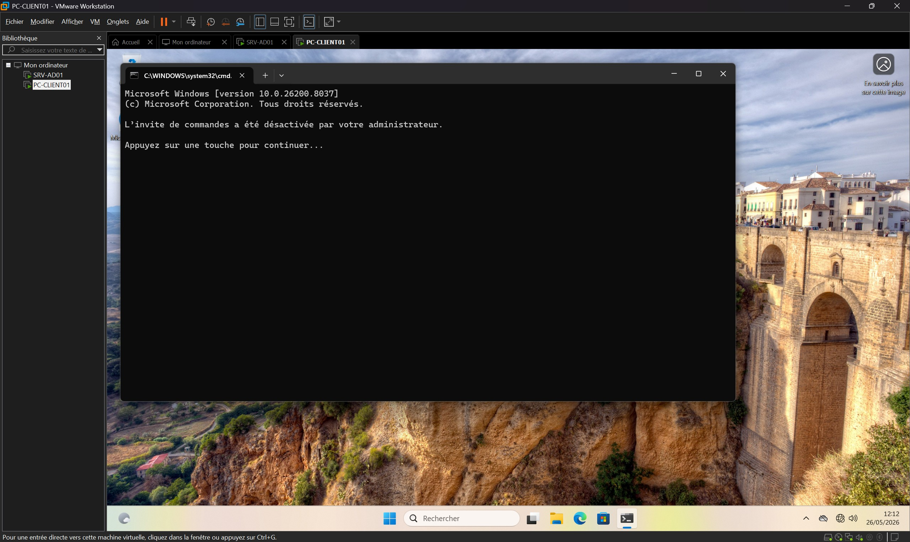

Déploiement d'un domaine Active Directory (Windows Server / GPO)
Présentation
Dans le cadre de ma formation, j’ai réalisé le déploiement et la sécurisation d’une infrastructure d'annuaire basée sur Active Directory Domain Services (AD DS) sous Windows Server 2022.
L’objectif était de remplacer une administration locale décentralisée par une gestion centralisée des identités, des accès et des politiques de sécurité (GPO) pour l'ensemble d'un parc informatique.
Objectifs
Isoler l'environnement virtuel et préparer le serveur.
Installer le rôle AD DS et configurer le DNS.
Promouvoir le serveur en contrôleur de domaine racine.
Déployer une Stratégie de Groupe (GPO) de restriction.
Intégrer un poste client Windows 11 et valider la configuration.
Environnement technique
Hyperviseur : VMware Workstation Pro (Réseau Host-Only)
Serveur : Windows Server 2022 Standard (SRV-AD01)
Client : Windows 11 Professionnel (PC-CLIENT01)
Technologies : AD DS, DNS, Stratégies de groupe (GPO), Kerberos, LDAP
Préparation de l'environnement virtuel
Afin de garantir l'étanchéité absolue de la maquette, j'ai isolé l'environnement virtuel sur un commutateur dédié en mode Host-Only.
J'ai expressément désactivé le service DHCP natif de l'hyperviseur pour éviter toute attribution d'adresse IP parasite lors du déploiement des machines virtuelles.

Nommage et adressage IP du serveur
Sur le serveur Windows Server 2022, j'ai défini un nom d'hôte normalisé (SRV-AD01) pour l'identifier clairement sur le réseau d'entreprise.
J'ai ensuite configuré la carte réseau avec une adresse IPv4 statique (192.168.10.1) et j'ai forcé le serveur DNS préféré sur la boucle locale (127.0.0.1) pour préparer l'hébergement de la zone de recherche.

Installation du rôle AD DS
Depuis le Gestionnaire de serveur, j'ai exécuté l'assistant d'ajout de rôles pour installer les services de domaine Active Directory (AD DS).
Cette action a également inclus l'installation du service DNS, indispensable au bon fonctionnement de l'annuaire et à la résolution des noms dans le domaine.
Promotion en contrôleur de domaine
Une fois les binaires installés, j'ai lancé l'assistant de configuration pour promouvoir le serveur, en choisissant de créer une nouvelle forêt avec le domaine racine sio.local.
Après le redémarrage, j'ai pu vérifier sur la mire de connexion que l'authentification s'effectuait bien sous l'autorité du nouveau domaine (SIO\Administrateur).

Structuration de l'annuaire Active Directory
À l’aide de la console Utilisateurs et ordinateurs Active Directory, j’ai structuré la base de données de l'annuaire pour la rendre exploitable.
J'ai créé une Unité d'Organisation (OU) nommée SOCIETE-SIO, dans laquelle j'ai généré un groupe de sécurité (G_Informatique) et un compte utilisateur nominatif (dzanatta).

Déploiement d'une Stratégie de Groupe (GPO)
Pour industrialiser la sécurité, j'ai créé une GPO spécifique que j'ai liée à l'OU SOCIETE-SIO afin qu'elle s'applique par héritage aux utilisateurs ciblés.
Dans l'éditeur de la strategy, j'ai activé la restriction empêchant l'accès à l'invite de commandes, une mesure courante pour limiter les actions des utilisateurs standards.
Configuration réseau du poste client
Sur le poste client Windows 11, j'ai configuré l'adresse IP statique en indiquant impérativement l'adresse du serveur (192.168.10.1) comme unique serveur DNS de confiance.
Avant d'aller plus loin, j'ai validé la communication de couche 3 en effectuant un test de ping réussi vers le contrôleur de domaine.

Intégration et authentification au domaine
Après avoir joint le poste client au domaine sio.local et redémarré, je me suis authentifié avec les identifiants réseau de mon utilisateur de test (SIO\dzanatta).
Le Bureau s'est chargé correctement, confirmant le montage du profil et l'identité du compte de domaine utilisé.


Test de recette final (GPO)
Afin de valider la parfaite conformité de la configuration, j'ai tenté d'ouvrir l'invite de commandes.
Celle-ci a été immédiatement bloquée par le système avec un message d'avertissement, prouvant le succès de l'application de la GPO.

Résultats obtenus
Serveur Windows Server promu en contrôleur de domaine fonctionnel.
Réseau virtuel isolé avec un adressage IP cohérent (Client/Serveur).
Annuaire structuré par Unités d'Organisation avec gestion des groupes.
Poste client Windows 11 rattaché avec succès au domaine.
Authentification réseau validée via le protocole Kerberos.
Stratégie de Groupe (GPO) de restriction déployée et fonctionnelle.
Compétences mobilisées
Gérer le patrimoine informatique
Identification, paramétrage et structuration d'un système d'annuaire d'entreprise.
Répondre aux incidents et aux demandes d’assistance et d’évolution
Mise en place d'une politique de sécurité (GPO) répondant à un besoin de durcissement de l'environnement de travail.
Mettre à disposition des utilisateurs un service informatique
Déploiement d'un service d'authentification centralisé et intégration d'un poste client.
Organiser son développement professionnel
Développement de compétences en administration système (Windows Server, AD DS, GPO) et documentation dans le portfolio.
Bilan personnel
Ce projet m’a permis de comprendre le fonctionnement centralisé d'Active Directory et les avantages considérables qu'il apporte dans la gestion d'un parc informatique.
J’ai appris à installer un contrôleur de domaine, à structurer logiquement les ressources dans l'annuaire, et à industrialiser la sécurité des postes grâce aux Stratégies de Groupe (GPO).
Cette réalisation est très importante car elle représente le socle de l'administration système en entreprise, offrant une vision claire de la gouvernance des accès réseau.